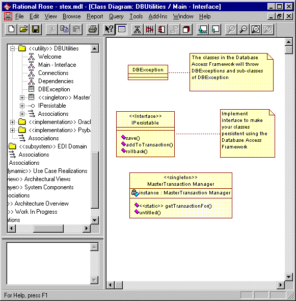

Standards: <<utility>> Package
TopicsNaming Standard
|
| Diagram | Purpose | Use | Comment |
| Main - Interface *1 | A class diagram showing the public classes within the package. | Mandatory | A diagram showing the classes in the package and their structure. Split over multiple diagrams if complex. |
| Dependencies | A class diagram showing which other packages the package is dependent on. | Mandatory* | *Not required if the package is not dependent on any other packages. |
| Connections | A class diagram showing which other interfaces and classes the components of the package are dependent on. | Optional | For utility packages
the Connections
diagram is just one of the possibly required Internal
Design class diagrams. All of
the connections may be shown on other more significant Internal
Design diagrams rendering the need for a
specific Connections
diagram obsolete. Can be combined with dependencies diagram for simple implementations. (i.e. Diagram named Dependencies / Connections) |
| Usage | A set of interaction (sequence) and / or
class diagrams showing how the clients of the package should use the classes. Naming convention: Usage: diagram name |
Mandatory | These diagrams show how a client would use
the classes in the package. It should not describe any internal behavior. The sequence diagram should state [Preconditions] and [postconditions] at the start and end of the trace. |
| Internal design | Class and sequence diagrams detailing the
internal design of the package. A package may have as many internal diagrams as the designer sees fit. Any class diagrams showing the internal design of the package should be pre-fixed 'Internal' to clearly distinguish them from the client facing documentation. General design diagrams should have meaningful names. Additional interaction diagrams may be required to show how the implementation classes interact internally where the starting point is one of the operations of the implementation class rather than an interface of the package. These should follow the naming convention: class Name :: operation name : optional description. If the diagram is about the whole class and not a specific operation then the operation name should be omitted. |
Mandatory | These diagrams show the internal design of the
package. Most utility packages are so simple that they do not require a large amount of internal design documentation. There should be at least one internal design diagram showing the internal structure of the package. These diagrams describe the structure of the design and how the structural elements collaborate to fulfill the utility's responsibilities.
|
| Welcome | A class diagram presenting the purpose of the subsystem. | Optional | An explanatory diagram welcoming users to the package. |
Notes:
*1 - The Main diagram's name is often post-fixed '- Interface' to clarify that it is purely showing the public elements of the utility package.
Constraints 
Normally all of the classes in the package are considered public (in contrast to a subsystem where only the interface is public). An example is the package containing value types.
Notes: The majority of classes in <<utility>> packages are global.
Examples
Example: An example <<utility>> package is shown below with its Main - Interface diagram displayed:
